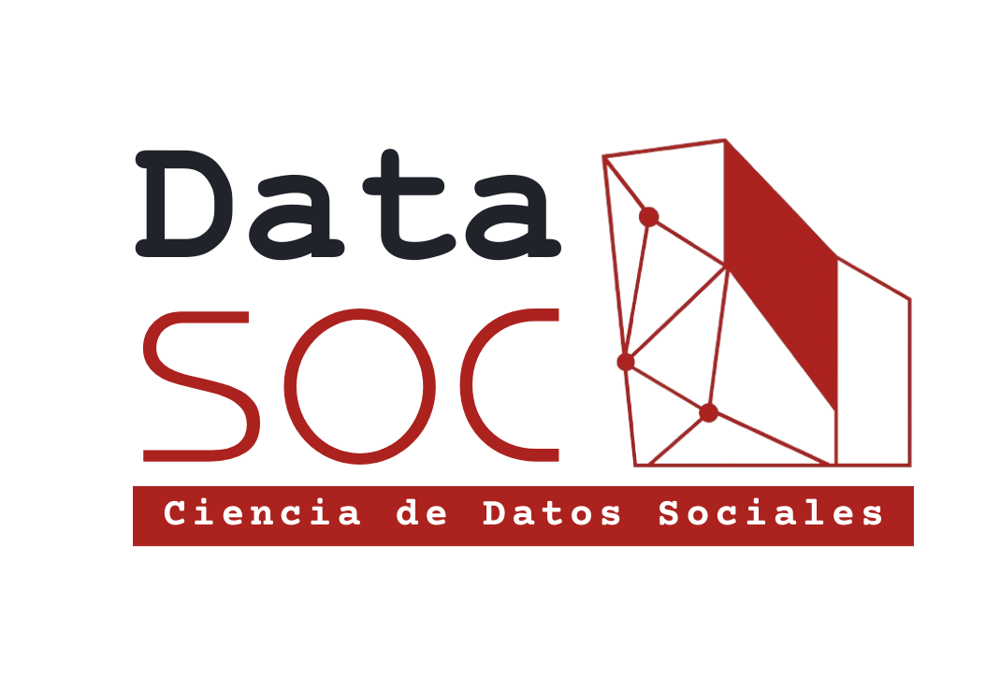

Estudio de Notas FACSO
El Estudio de Notas de la Facultad de Ciencias Sociales es el primer análisis enfocado exclusivamente a comprender cómo se distribuyen las notas en la Facultad y cuáles son…
March 2026

DataSOC
DataSOC es el Centro de Datos Sociales de la Facultad de Ciencias Sociales de la Universidad de Chile. Su objetivo es posicionar a FACSO como un referente en el análisis, procesamiento, gestión y transferencia de datos sociales, en un marco de ciencia abierta, guiado por altos estándares conceptuales, metodológicos y éticos.
LÍNEAS DE TRABAJO
Investigación avanzada en ciencias de datos sociales, integrando la diversidad de datos producidos por las ciencias sociales
Formación metodológica avanzada en todos los niveles, incluyendo pregrado, postgrado y educación continua
Servicios especializados de acompañamiento técnico en el análisis, la visualización y el almacenamiento de datos sociales
Servicios de aseguramiento y certificación de la calidad de datos científicos-sociales bajo criterios de transparencia, integridad, accesibilidad y reproducibilidad en la producción, análisis y difusión de datos.
Desarrollo y transferencia de modelos de gobernanza de datos para la gestión universitaria
PROYECTOS Y REPORTES
EQUIPO